- / -
EMSC3025/6025: Remote Sensing of Water Resources
Dr. Sia Ghelichkhan
- / -
Runoff
EMSC3025/6025
Dr. Sia Ghelichkhan
Objectives
By the end of this lecture, you should be able to:
- Understand the processes that generate runoff and lead to channelized flow.
- Identify and explain the main mechanisms responsible for delivering water to streams and rivers.
- Distinguish between overland flow, subsurface flow, and groundwater contributions to streamflow.
- Describe and compare key theories of stormflow generation (Horton, Betson, Hewlett & Hibbert).
- Explain the role of macropores and piston flow in rapid water movement.
- Apply and evaluate methods for measuring streamflow, including the velocity–area method, stage–discharge relationships, and the use of flumes and weirs.
- Recognise the limitations and considerations of different streamflow measurement techniques.
Runoff
Definitions
- Any process that results in water moving toward channelized flow, following precipitation reaching the surface.
- Mechanisms responsible for delivering water to streams and rivers.
- River/streamflow: The movement of water in channels toward the ocean.
- Riverflow is typically quantified as discharge: volume of water per unit time
\frac{m^3}{s} .
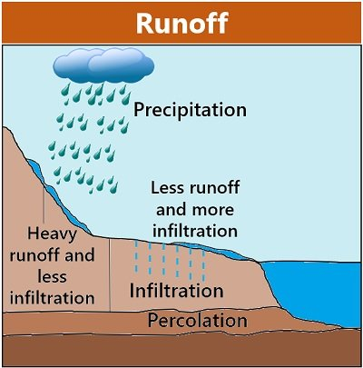
biologyreader.com: Components involved in runoff.{kind=link}
Hydrographs and runoff
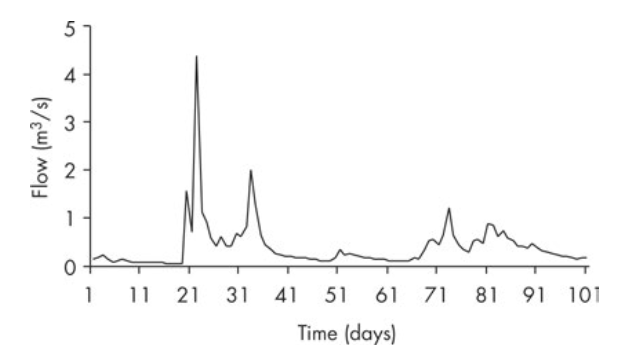
- A continuous record of streamflow is called a hydrograph.
- Peak/storm flow: Water present in a stream during and immediately after a significant rainfall event.
- Globally controlled by rainfall intensity and duration; at catchment scale, affected by catchment size, slope, shape, soil characteristics, vegetation type and cover, degree of urbanisation, and antecedent soil moisture.
- Periods between peaks are referred to as baseflow (distinct from low flow), typically understood to be supplied by groundwater.
Catchments and their geology
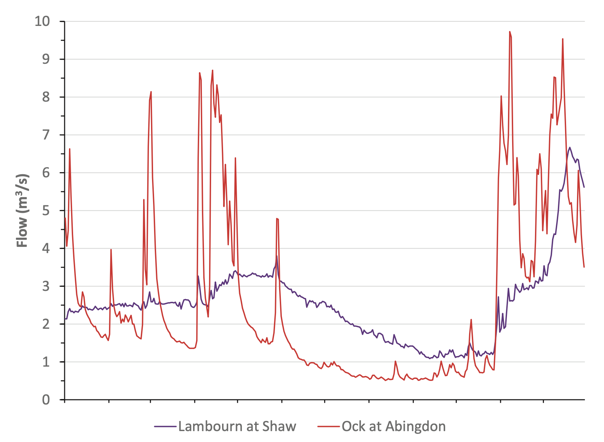
Identical climatic conditions, but different geology. Rocks of the Lambourn are all high permeability, while the Thames catchment is mostly low permeability + bedrock.
Storm hydrograph in detail
- Rising limb: Steep section leading up to peak flow.
- Contributed by: Channel precipitation (rain falling directly into the stream) and rapid runoff.
- Recession limb: Follows the peak and shows a gradual decline in streamflow.
- Influenced by stormwater arriving from upstream and contributions from subsurface flow.
The exact proportion of precipitation that becomes channelized flow is difficult to determine.
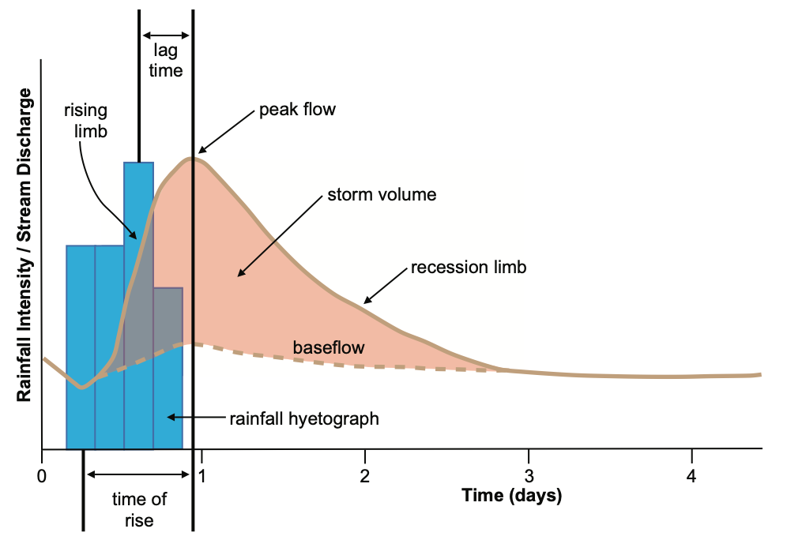
Runoff Mechanism
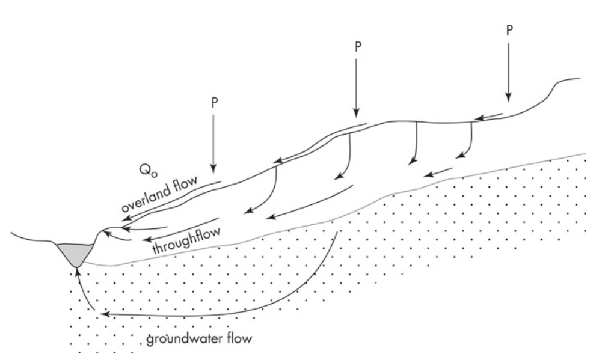
Continuous sheets of overland water flow are rarely observed in nature.
- Overland flow: Water flowing over the land surface after precipitation.
- Horton (1933): Overland flow occurs when rainfall intensity exceeds the infiltration capacity of the soil.
Excess water then flows as a shallow surface layer.
Infiltration capacity acts as a threshold. However, in most cases, infiltration rates exceed typical rainfall intensities.
Runoff Mechanism
Continuous sheets of overland water flow are rarely observed in nature.
- However, in most cases, infiltration rates exceed typical rainfall intensities.}
| Soil and vegetation | Infiltration rate (mm/hr) | Rainfall type | Rainfall intensity (mm/hr) |
|---|---|---|---|
| Forested loam | 100–200 | Thunderstorm | 50–100 |
| Loam pasture | 10–70 | Heavy rain | 5–20 |
| Sand | 3–15 | Moderate rain | 0.5–5 |
| Bare clay | 0–4 | Light rain | 0.5 |
Runoff Mechanism
- Betson (1964): Introduced the concept of partial contributing areas — only specific parts of a catchment produce overland flow.
The importance of infiltration is retained, but the idea of uniform thin flow is questioned. - Hewlett & Hibbert (1967): Overland flow occurs when the water table rises to the surface due to infiltration and throughflow.
This results in saturated areas near channels and lower slopes where return flow and direct precipitation dominate.
Who was right?
Ideas on stormflow
- All theories capture aspects of the truth.
- Saturated overland flow dominates in humid, mid-latitude regions.
- The variable source area concept best represents stormflow processes.
- In arid/semi-arid zones, intense rainfall and low infiltration lead to flash flooding.
- Hydrophobic soils may exhibit nonlinear infiltration: initially very low, then increasing.
| Horton | Betson | Hewlett and Hibbert | |
|---|---|---|---|
| Infiltration | Governs overland flow | Governs overland flow | All rainfall infiltrates initially |
| Overland flow mechanism | Infiltration-excess | Infiltration-excess | Saturated overland flow |
| Contributing area | Uniform across the catchment | Confined to specific zones | Varies in time and space |
Comparison of key theories explaining stormflow generation
Subsurface flow
- The variable source area model proposes that only parts of the catchment contribute to the hydrograph.
- Overland flow alone can’t explain total discharge observed in hydrographs.
- The gradual decline in the hydrograph’s recession limb suggests a subsurface flow component.
- Tracer studies show significant presence of older water during stormflow.
- This points to throughflow and groundwater contributions.
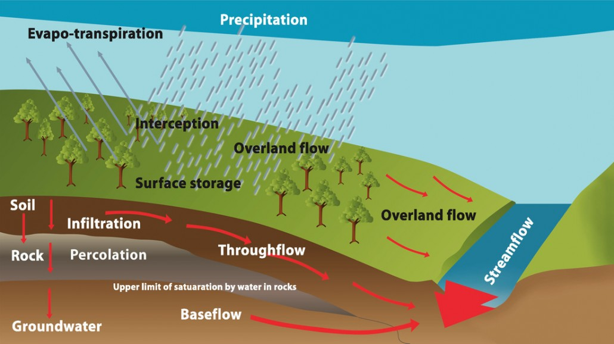
Throughflow
- Throughflow: Movement of water through the unsaturated zone (soil matrix).
- Described by the Darcy or Richards equations.
- Flow is not only vertical; on slopes, water moves laterally downslope.
- Example: Fine sandy loam → ~13 mm/hour flow rate.
Piston Flow
- Proposed by Horton & Hawkins (195): Water entering at the top of the soil column displaces older water at the bottom, which then enters the stream.
- Similar to a piston where top pressure pushes fluid at the bottom.
- The discharge can be viewed as a pressure wave.
- Though unconventional, the combination of rainfall above and impermeable bedrock below creates this piston effect.
- The added water generates a hydraulic gradient that drives water movement along the base of the soil layer, which typically has higher conductivity.
- Analogy: A thatched roof—water moves quickly along aligned channels (macropores), especially in the downslope direction.
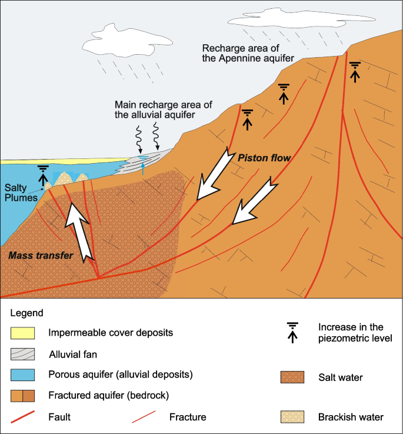
Macropores
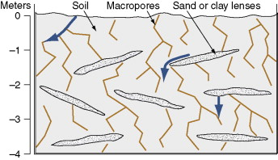
Macropores
Large, interconnected pores in soil, generally >3 mm in diameter.
- Key pathway for rapid subsurface flow.
- Hydrological role: Enable fast water movement bypassing much of the soil matrix.
- Ongoing debate: Whether these pores form continuous flow networks or are limited by disconnected segments.
Groundwater contribution
- Historically, groundwater was thought to only contribute to baseflow.
- Farvolden (1979) introduced the capillary fringe hypothesis.
- Concept: A “groundwater ridge” forms near the stream during recharge.
- Added infiltration saturates the unsaturated zone, generating hydraulic gradients that drive discharge to the stream.
- The water-saturation relationship in soils is nonlinear.
- This mechanism increases both the rate and volume of discharge.
- The Maimai experiments confirmed groundwater as a rapid source of streamflow.
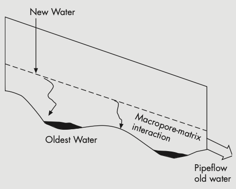
A summary of different processes
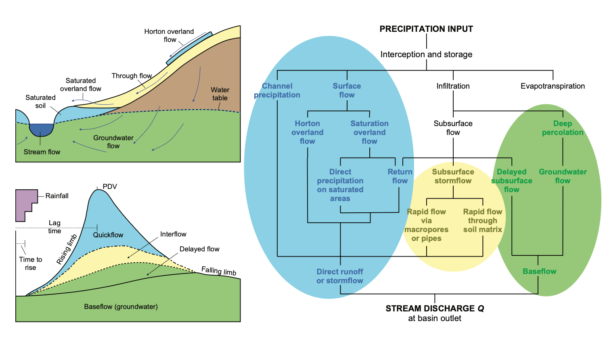
Measuring streamflow
Velocity-area method
- The velocity–area method multiplies stream velocity by cross-sectional area to estimate discharge.
- Black dots: locations of velocity readings.
- Dashed lines: triangular/trapezoidal cross sections.
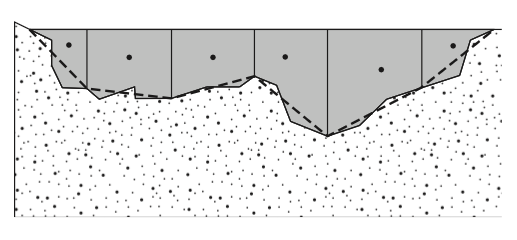
The velocity–area method of streamflow measurement. The black circles indicate the position of current meter velocity readings. Dashed lines represent the triangular or trapezoidal cross-sectional area through which the velocity is measured.Velocity–area method: considerations
The velocity–area method requires the assumption that the velocity measured is representative of the entire cross-sectional flow.
Since multiple measurements across the depth are rarely feasible, adjustments are needed to account for velocity variations.
Water flows faster near the surface than near the bed due to bed friction.
A general guideline: measure velocity at 60% of depth from the surface (or 40% above the bed).
For deeper rivers, average readings at 20% and 80% of depth for better accuracy.
If no velocity meter is available, a float method can provide rough estimates by timing surface travel over a measured distance.
Surface floats overestimate true velocity since they ride faster-flowing surface water.
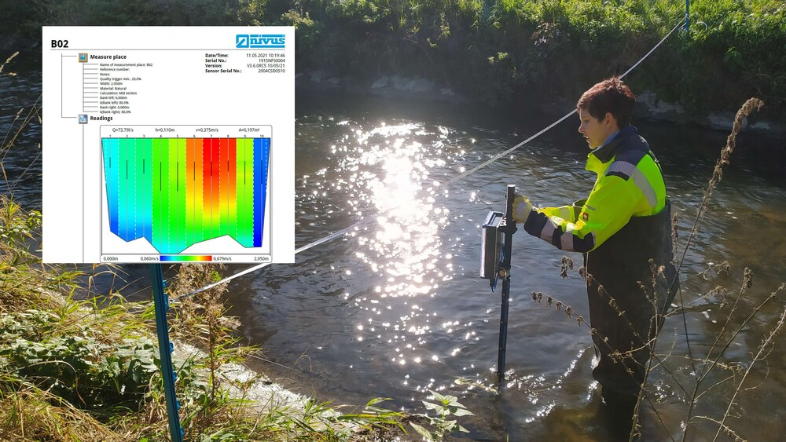
- The velocity–area method works well for small rivers, but its accuracy depends on sampling strategy.
- It becomes less reliable in turbid, shallow, or rough-bedded streams (e.g., mountain creeks).
- In such cases, consider alternative methods like dilution gauging. Illustration of float-based surface velocity measurement
Stage–Discharge Relationship
Stage = water level or height at a specific point in a river.
Discharge = volumetric flow rate (e.g.
\frac{m^3}{s} ).Repeated discharge measurements (via velocity–area method) enable creation of a rating curve.
A rating curve relates stage to discharge and allows continuous discharge estimation from simple stage measurements.
Developed by pairing stage readings (e.g. using a stilling well) with discharge data.
Rating curves are typically non-linear, reflecting the geometry of riverbanks:
As rivers fill between banks, more water is required to raise stage than at low flows.Assumes a stable riverbed. Changes (e.g. due to flood scouring or deposition) will invalidate the curve.
This is why flumes or weirs are often installed to stabilize the control section.
Limitations:
- Few high-flow measurements → less reliable for peak floods.
- High-flow events are dangerous and infrequent.
- Thus, errors increase at the upper end of the curve.
Remember: discharge is inferred from measured stage — not directly observed.
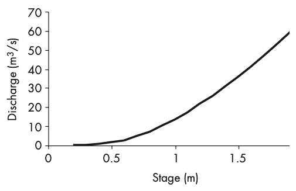
Flumes and weirs
- In principle the same as stage-discharge relationship, but with a control section.
- Flumes and weirs are stream gauging structures that extend the stage–discharge method by imposing control over stream velocity and cross-sectional area.
- By doing so, they provide a continuous record of stream discharge.
- The key is to standardize flow through a known cross-sectional area so that velocity becomes predictable or known.
- This is especially useful because stream velocity varies with depth, but gauging structures enforce a consistent flow regime.
- These structures are designed so that discharge becomes a function of stage alone.
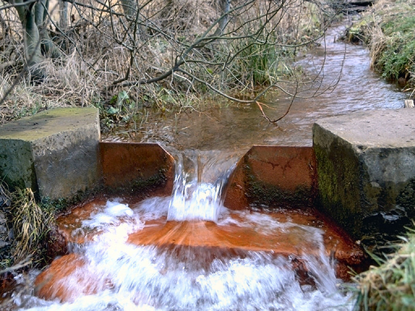
Discharge equations for weirs
- Discharge through weirs is determined by known formulas based on weir shape.
- For a V-notch weir (Very accurate for low-flow rates):
Q = 0.53 \sqrt{2g} \, C \, \tan\left(\frac{\theta}{2}\right) b^{2.5} - Where:
Q = discharge (\text{m}^3/\text{s} )g = gravity (9.81\text{m}/\text{s}^2 )C = discharge coefficient (depends on\theta )\theta = notch angleb = stage height (m)
- For a 90° V-notch,
C = 0.578 , and:Q = 1.366\ b^{2.5} - These equations follow ISO 1438 standards for gauging structures.
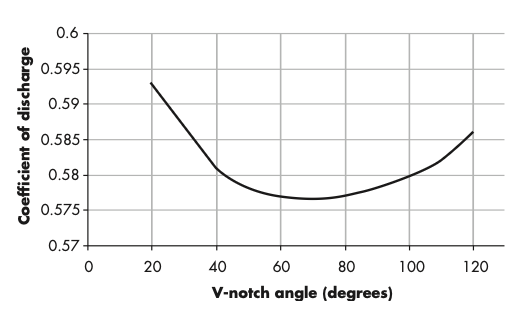
Flumes and weirs: design considerations
- The shape of the gauging structure affects sensitivity to changes in flow:
- V-notches are excellent for low flows due to higher sensitivity.
- As discharge increases, cross-sectional area expands nonlinearly.
- Under high flows, it’s crucial that water doesn’t bypass the structure.
- V-notches are commonly used with 90° or 120° angles based on application needs.
- Stilling ponds slow down water before measurement but can trap sediment.
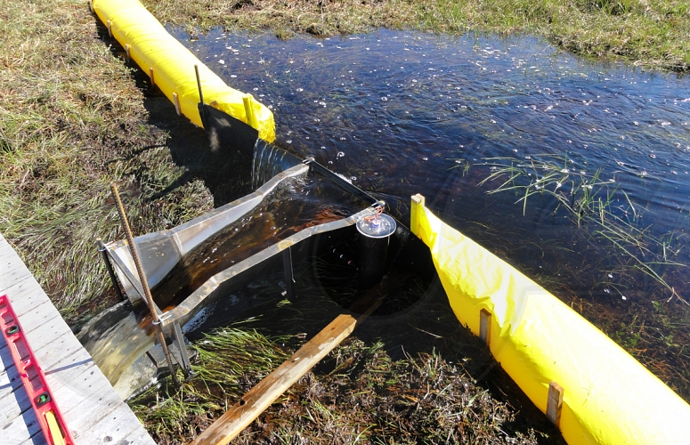
A trapezoidal flume helps flush sedimentFlumes vs. weirs
- Flumes and weirs both allow continuous measurement of stream discharge but have key differences:
- Weir: Water flows over a structure (like a small waterfall).
- Flume: Water flows through a structure without dropping.
- Flumes tend to produce less sedimentation, making them suitable for high-energy environments.
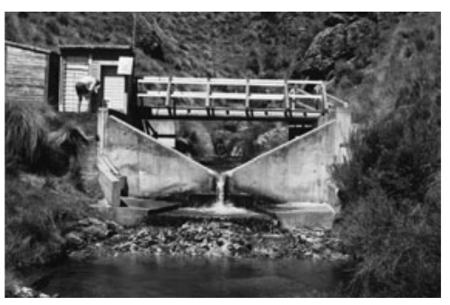
- Trapezoidal flumes can flush out sediment efficiently, avoiding stilling pond build-up.
- Both are suitable for small streams but not large rivers, due to structural stress.
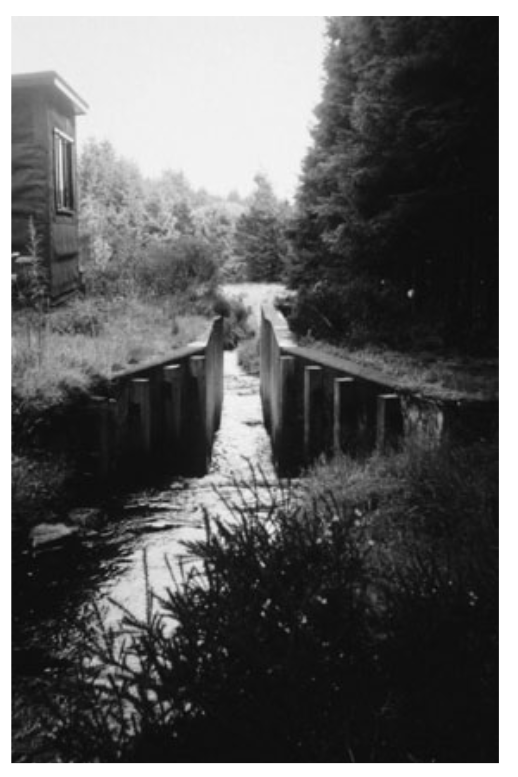
Summary
So here we covered that:
- Runoff is the movement of water toward channels, influenced by rainfall, soil, vegetation, and terrain.
- Stormflow is shaped by infiltration capacity, contributing areas, and subsurface dynamics.
- Horton, Betson, and Hewlett & Hibbert offer complementary theories explaining overland and saturated flow.
- Key mechanisms include variable source areas, piston flow, and macropore-driven throughflow.
- Groundwater contributes rapidly via capillary rise during storms.
- Streamflow is measured using methods like velocity–area, stage–discharge curves, and gauging structures (weirs/flumes).